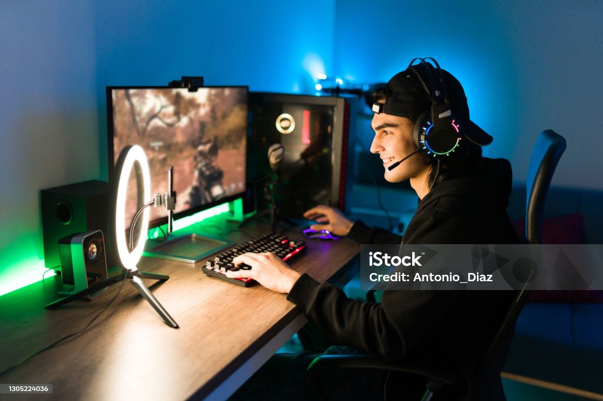

Projetos
Situação de Aprendizagem: PC GAMER
Iniciação
| Nome |
Curso |
Fase |
| Octávio |
Desenvolvimento WEB |
Planejamento |
| Débora |
Desenvolvimento WEB |
Iniciação |
| Victória |
Desenvolvimento WEB |
Execução |
| René |
Desenvolvimento WEB |
Monitoramento e Controle |
| Guilherme |
Desenvolvimento WEB |
Encerramento |

- Octávio: ficou responsável pelo planejamento
das peças dos componentes do PC.
- Débora: ficou responsável pela iniciação
das ideias.
- Victória: ficou responsável pela execução
dos slides.
- René: ficou responsável pelo monitoramento
das peças e slides.
- Guilherme: ficou responsável pelo encerramento.
Situação de Aprendizagem: Infraestrutura Tecnológica
Monitoramento e Controle
| Nome |
Curso |
Fase |
| Octávio |
Desenvolvimento WEB |
Execução |
| Fernando |
Desenvolvimento WEB |
Planejamento |
| Mariana |
Desenvolvimento WEB |
Iniciação |
| Giovanna |
Desenvolvimento WEB |
Monitoramento e Controle |
| Ana Cecília |
Desenvolvimento WEB |
Encerramento |

- Octávio: ficou responsável pela execução
dos orçamentos e portugol.
- Fernando: ficou responsável pelo planejamento
das ideias e responsabilidades.
- Mariana: ficou responsável pela iniciação
dos slides e logo.
- Giovanna: ficou responsável pelo monitoramento
dos hardwares e manutenções.
- Ana Cecília: ficou responsável pelo encerramento.
Exercícios de Fixação: Rede de Computadores
Encerramento
| Nome |
Curso |
Fase |
| Octávio |
Desenvolvimento WEB |
Planejamento |
| Maria Vitória |
Desenvolvimento WEB |
Execução |
| Giovanna |
Desenvolvimento WEB |
Monitoramento e Controle |
| Karol |
Desenvolvimento WEB |
Encerramento |
| Marcos |
Desenvolvimento WEB |
Iniciação |
Octávio: ficou responsável pelo planejamento
das responsabilidades e ideias.
Maria Vitória: ficou responsável pela execução
dos slides
Giovanna: ficou responsável pelo monitoramento
dos slides e das ideias.
Karol: ficou responsável pelo encerramento
do projeto.
Marcos: ficou responsável pela iniciação.